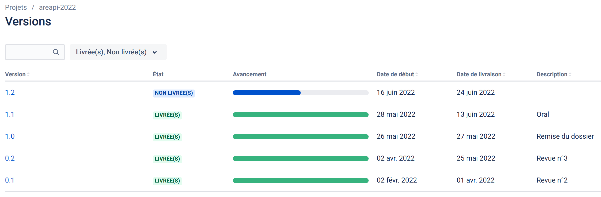
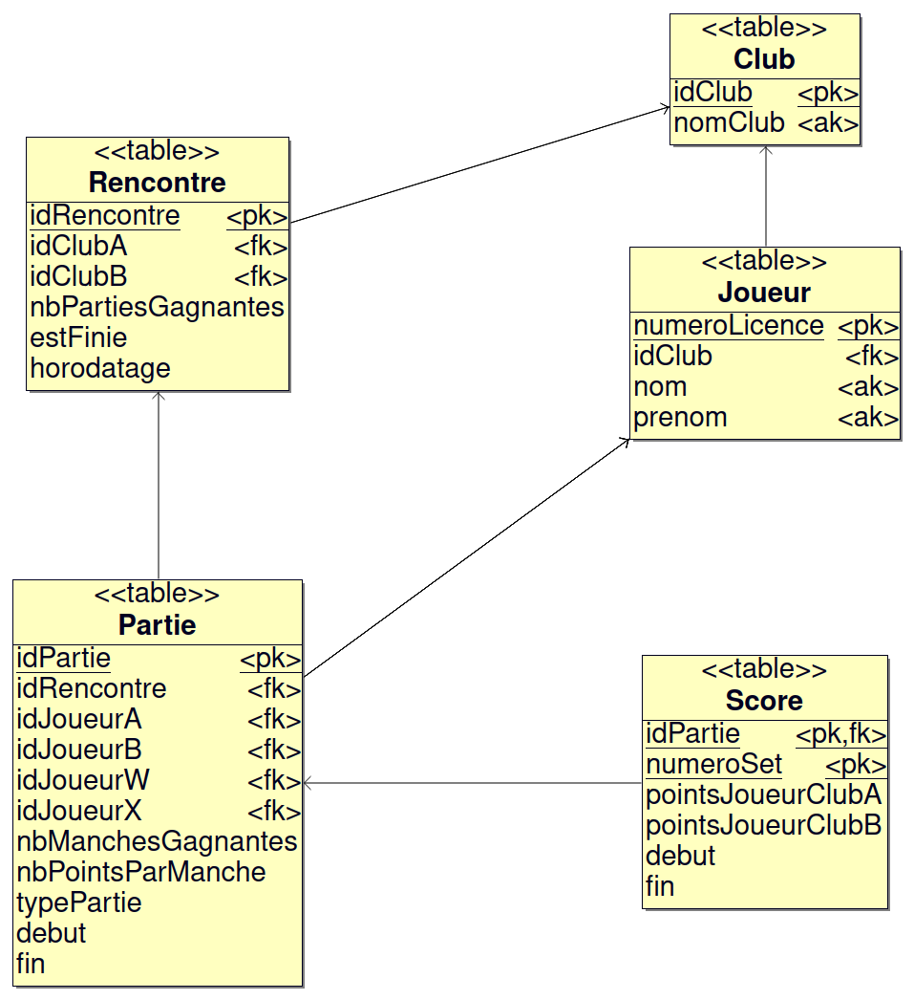
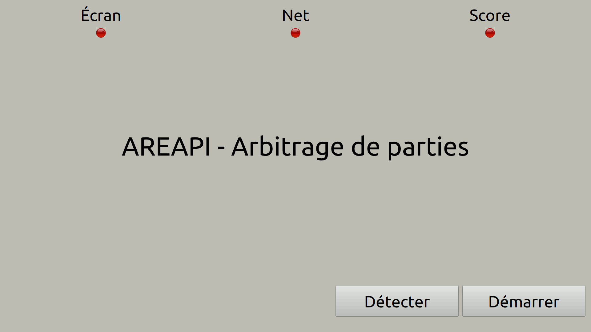

Système d’assistance à l’arbitrage lors d’une partie de tennis de table en compétition.
- Module de gestion de partie (Arbitre-AREA IR) : l’arbitre gère le score de la partie à partir d’une application sur un écran tactile
- Module de détection de “net” (Net-AREA EC) : le module détecte la validité d’un “net” de la balle lors d’un service et le signale
- Module d'affichage de score (Score-AREA EC) : les joueurs, les arbitres et le public peuvent visualiser en “temps réel” le score d’une partie
- Module d'affichage (Afficheur-AREA IR) : les joueurs, les arbitres et le public peuvent visualiser en “temps réel” le déroulement des parties sur un écran de télévision
Historique des versions

Auteurs
Kanban
areapi-2022
Documentation du code
https://btssn-lasalle-84.github.io/areapi-2022/
Base de données

Modules Arbitre-AREA et Afficheur-AREA

©️ LaSalle Avignon 2022